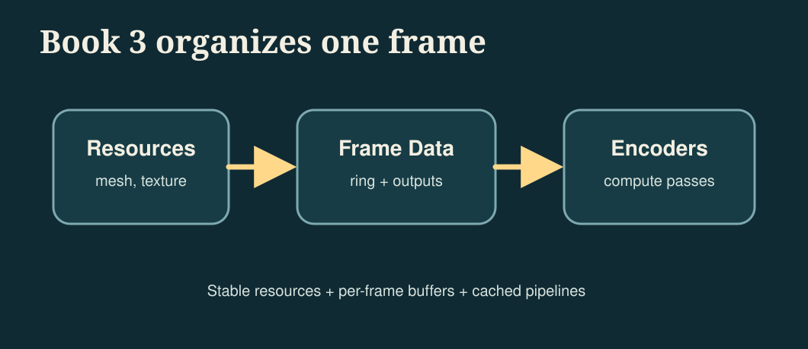
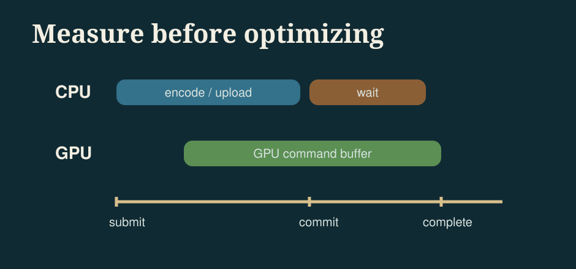
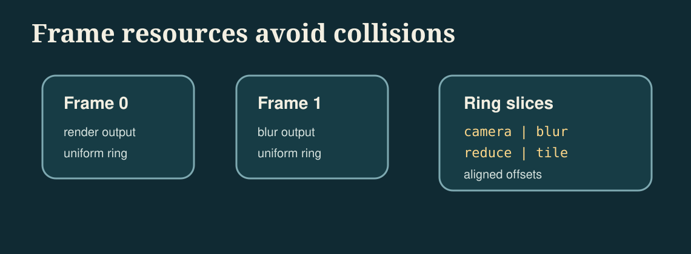
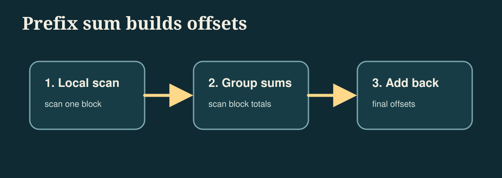
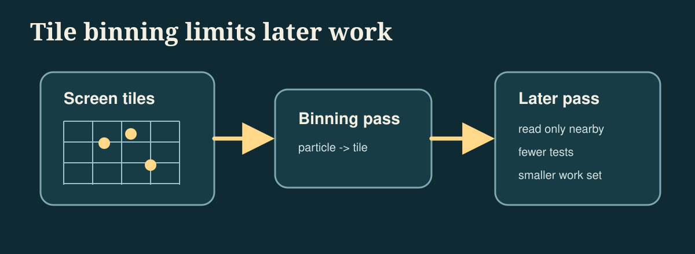
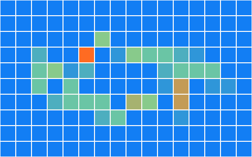

Metal-cpp: Performance and Compute
Book 2 sets up the main path of rendering quality: mesh, texture, camera, Lambert, Blinn-Phong, and PBR. Book 3 does not continue to add GUI, nor does it continue to add basic image quality functions, but organizes Metal as a "measurable and scalable compute platform". The goal is to turn the same set of inputs into a stable off-screen baseline, and then gradually introduce profiling, frame resources, uniform ring buffer, and common GPU workloads such as reduction, prefix sum, blur, particle, and tile binning.

The current reference code for Book 3 actually produces these outputs:
build/MetalCppRenderingEngine/engine-reference.ppmbuild/MetalCppRenderingEngine/engine-blur.ppmbuild/MetalCppRenderingEngine/engine-particles.ppmbuild/MetalCppRenderingEngine/engine-tile-heatmap.ppmbuild/MetalCppRenderingEngine/engine-metrics.txt
Scope
Book 2 is responsible for improving the rendering results step by step, and Book 3 is responsible for organizing the same type of program to be more stable, easier to measure, and easier to expand to larger compute workloads. There will no longer be a focus on windows, UI, or more material features, but rather on buffering, dispatch, synchronization, and profiling.
Overview
Book 3 still uses off-screen output because this type of program is more suitable for performance experiments: fixed input, fixed output, no window events and UI life cycle interference. You can schedule multiple compute passes in the same frame and check the resulting graph and timing at the same time.
The following paragraph is the command to be executed at the current stage, not the content written into a source file. First use it to confirm that the Book 3 target can be built and run independently.
cmake -S . -B build
cmake --build build --target MetalCppRenderingEngine
./build/MetalCppRenderingEngine/MetalCppRenderingEngineProject Layout
The reference code in Book 3 is still deliberately kept into two files: a C++ scheduler and a Metal shaders file. In this way, the new workload in each chapter can clearly fall on the two lines of "how the CPU side organizes the buffer and command buffer" and "how the GPU side kernel reads these data."
The following paragraph is not to be copied to a source code file, but the current directory division of Book 3.
main.cpp # pipelines, frame resources, ring buffer, metrics, output files
Shaders.metal # reference render, blur, reduction, prefix sum, particles, tile binningReference Renderer
Keep a minimal reference renderer first. It is not to pursue complex graphics, but to provide a stable baseline for subsequent optimization and compute pass. The current reference implementation still uses a small quad, a fixed checker map, and a stable set of camera/light parameters.
Open main.cpp and first add the basic input structure and static scene data of Book 3. This step is to initialize the new file, not to modify the functions in the old chapter.
struct Vertex
{
Float4 position;
Float4 normal;
Float4 uv;
};
struct Triangle
{
uint32_t a;
uint32_t b;
uint32_t c;
uint32_t _pad;
};
struct Camera
{
Float4 origin;
Float4 lowerLeft;
Float4 horizontal;
Float4 vertical;
Float4 lightDirection;
uint32_t width;
uint32_t height;
uint32_t textureWidth;
uint32_t textureHeight;
uint32_t triangleCount;
uint32_t _pad[3];
};The corresponding reference render kernel is written in Shaders.metal. It emits a ray to each pixel, intersects the two triangles, then samples the checker map based on the hit's UV and performs minimum Lambert diffuse reflection.
kernel void render_mesh(device const Vertex* vertices [[buffer(0)]],
device const Triangle* triangles [[buffer(1)]],
device const uchar4* texturePixels [[buffer(2)]],
constant Camera& camera [[buffer(3)]],
device uchar4* output [[buffer(4)]],
uint2 id [[thread_position_in_grid]])Profiling First
Measure before optimizing. Book 3 first divides one frame into three time periods:
- CPU encode time: the time it takes for the CPU to create the encoder, bind the buffer, and schedule dispatch.
- CPU wait time:
waitUntilCompleted()Let the CPU stop and wait for the GPU. - GPU time: Command buffer GPU execution time provided by Metal

Add timing records in main.cpp. The following paragraph is connected near the command buffer encoding and submission, and is used to replace the old writing method of "only commit without measurement".
const auto cpuFrameStart = std::chrono::high_resolution_clock::now();
MTL::CommandBuffer* commandBuffer = queue->commandBuffer();
const auto cpuEncodeEnd = std::chrono::high_resolution_clock::now();
commandBuffer->commit();
const auto cpuWaitStart = std::chrono::high_resolution_clock::now();
commandBuffer->waitUntilCompleted();
const auto cpuFrameEnd = std::chrono::high_resolution_clock::now();
metrics.gpuMs = (commandBuffer->GPUEndTime() - commandBuffer->GPUStartTime()) * 1000.0;After running the current reference implementation, engine-metrics.txt will write out a set of real values. You can already see in the current output that "CPU encode is almost not a problem, the main time is waiting for the GPU to complete":
cpu_encode_ms: 0.035
cpu_wait_ms: 3.408
cpu_frame_ms: 3.449
gpu_frame_ms: 0.482
gpu_kernel_ms: 2.596
average_luminance: 0.207CPU/GPU Synchronization
Book 3 begins to explicitly distinguish between "when the CPU can continue to write data" and "when the GPU has finished reading the previous round of data." The current reference code still ends with waitUntilCompleted() because it is most suitable for teaching: you can read back the result image and metrics stably, and clearly see that the waiting time has been measured individually.
In the frame loop of main.cpp, first clean and fill the shared buffer to be written in this frame, then submit the command buffer, and finally wait uniformly. This section is to continue modifying the existing main loop, not to add an independent function.
FrameResources& frame = frames[frameIndex % kFrameCount];
frame.ringHead = 0;
std::memcpy(frame.prefixInput->contents(), prefixFlags.data(), prefixFlags.size() * sizeof(uint32_t));
std::memcpy(frame.particleA->contents(), particles.data(), particles.size() * sizeof(Particle));
clearBuffer(frame.renderOutput, pixelCount * 4);
clearBuffer(frame.blurOutput, pixelCount * 4);
clearBuffer(frame.partialSums, partialCount * sizeof(float));
commandBuffer->commit();
commandBuffer->waitUntilCompleted();If Book 3 is expanded into a true multi-frame in-flight program in the future, the idea in this section remains the same, except that "wait for each frame" is changed to "only wait when readback or the ring buffer is about to be overwritten".
Frame Resources
Book 2 can directly finish writing in a shared buffer and wait for the GPU to finish reading. Book 3 should begin to explicitly distinguish "which resources can be reused for a long time and which resources belong to the temporary results of a certain frame."

Add FrameResources to main.cpp. This is a new structure that can be added directly to the auxiliary structure definition area.
struct FrameResources
{
MTL::Buffer* uniformRing = nullptr;
MTL::Buffer* renderOutput = nullptr;
MTL::Buffer* blurOutput = nullptr;
MTL::Buffer* particlePreview = nullptr;
MTL::Buffer* partialSums = nullptr;
MTL::Buffer* prefixInput = nullptr;
MTL::Buffer* prefixOutput = nullptr;
MTL::Buffer* tileCounts = nullptr;
MTL::Buffer* particleA = nullptr;
MTL::Buffer* particleB = nullptr;
uint32_t ringHead = 0;
};Then rotate them by frame index in the main loop. Although this is ultimately an off-screen program, you can still organize the resources into shapes that will be used by the real rendering cycle.
std::array<FrameResources, kFrameCount> frames{};
for (uint32_t frameIndex = 0; frameIndex < kFrameCount; ++frameIndex)
{
FrameResources& frame = frames[frameIndex % kFrameCount];
frame.ringHead = 0;
clearBuffer(frame.renderOutput, pixelCount * 4);
clearBuffer(frame.blurOutput, pixelCount * 4);
clearBuffer(frame.tileCounts, tileCount * sizeof(uint32_t));
}Uniform Ring Buffer
The program in Book 3 will arrange multiple different compute passes in one frame: render, blur, reduction, prefix sum, particle, and tile binning. Don't create a new small buffer for each pass. A more reliable approach is to have a large shared buffer, which is sliced by 256 bytes, and each pass is bound to a different offset.
First add ring allocator in main.cpp. This is a new helper function that can be placed near the resource creation function.
RingSlice allocateRing(FrameResources& frame, uint32_t bytes)
{
const uint32_t alignedBytes = align256(bytes);
RingSlice slice;
slice.offset = frame.ringHead;
slice.cpuPointer = static_cast<uint8_t*>(frame.uniformRing->contents()) + frame.ringHead;
frame.ringHead += alignedBytes;
return slice;
}Then write the parameters of each pass to different slices, and then bind the same uniformRing to the encoder with different offsets.
const RingSlice cameraSlice = allocateRing(frame, sizeof(Camera));
std::memcpy(cameraSlice.cpuPointer, &camera, sizeof(Camera));
const RingSlice imageSlice = allocateRing(frame, sizeof(ImageParams));
std::memcpy(imageSlice.cpuPointer, &imageParams, sizeof(ImageParams));
encoder->setBuffer(frame.uniformRing, cameraSlice.offset, 3);
encoder->setBuffer(frame.uniformRing, imageSlice.offset, 2);Data Layout
For the first time in Book 3, you need to carefully look at the data layout. The current particle system uses AoS, that is, each particle puts position and velocity together. Because particle_step in this book will read and write back these two fields at the same time every time, this layout is more intuitive and more suitable for novices to run through the ping-pong update first.
Keep the same Particle structure in both main.cpp and Shaders.metal. This is a new structure definition, not just adding a few lines to the old function.
struct Particle
{
Float2 position;
Float2 velocity;
};After you run through this version, you can try to split it into SoA, such as separate positionX[], positionY[], velocityX[], velocityY[]. The current version of the tutorial does not force the switch to SoA because the focus of Book 3 is to let you see "the layout affects subsequent optimization space" rather than introducing two sets of particle implementations at once.
Pipeline and Resource Cache
Book 3 should not re-create the pipeline in every frame. The current reference code creates all compute pipelines in a unified manner during the startup phase, and then reuses the entire frame. This is the minimal pipeline cache in this book.
Added Pipelines structure and helper functions in main.cpp. This is new startup code that can be added directly near the resource creation helper function.
struct Pipelines
{
MTL::ComputePipelineState* render = nullptr;
MTL::ComputePipelineState* blur = nullptr;
MTL::ComputePipelineState* reduction = nullptr;
MTL::ComputePipelineState* prefix = nullptr;
MTL::ComputePipelineState* particleStep = nullptr;
MTL::ComputePipelineState* particleRaster = nullptr;
MTL::ComputePipelineState* tile = nullptr;
};Pipelines pipelines = makePipelines(device, library);
if (!pipelinesReady(pipelines))
{
releasePipelines(pipelines);
return 1;
}In this tutorial, we first understand "cache" as "create once and reuse". If we continue to expand Book 3 in the future, we will put the cache strategies of texture, sampler, and argument buffer into the same routine.
Threadgroup Shape
Different kernels should not blindly share the same threadgroup shape. 2D image passes are more suitable for 2D tiles; particle updates and tile binning are more suitable for 1D batches; reduction needs to match the threadgroup size and shared scratch array.
In main.cpp, convert hardcoded threadgroup size into constants and small helper functions. The following paragraph is a supplement to the existing constant area and auxiliary function area.
constexpr uint32_t kThreadgroup1D = 256;
constexpr uint32_t kImageThreadsX = 16;
constexpr uint32_t kImageThreadsY = 8;
constexpr uint32_t kParticleThreads = 64;
MTL::Size makeImageThreadgroup()
{
return MTL::Size::Make(kImageThreadsX, kImageThreadsY, 1);
}
MTL::Size makeLinearThreadgroup(uint32_t width)
{
return MTL::Size::Make(width, 1, 1);
}Then change the dispatch call to a semantic helper instead of writing bare numbers everywhere:
encoder->dispatchThreads(MTL::Size::Make(kWidth, kHeight, 1),
makeImageThreadgroup());
encoder->dispatchThreads(MTL::Size::Make(kParticleCount, 1, 1),
makeLinearThreadgroup(kParticleThreads));Command Encoding Strategy
Book 3's command buffer no longer only contains one kernel. The current reference implementation will encode these tasks sequentially in one frame:
1. render_mesh
2. reduce_luminance
3. blur_image
4. prefix_sum_16
5. particle_step (ping-pong for 24 steps)
6. rasterize_particles
7. tile_bin_particlesThe goal of this sequence is not to "maximize performance", but to stuff different types of compute workloads into the same command buffer, so that you can view timing, result images, and indicator files at the same time.
Parallel Reduction
Reduction is the first true "performance compute kernel" in Book 3. It compresses the brightness of the entire reference image into a set of partial sums, and then the CPU performs the final sum of these partial sums. In this way, we can first understand the reduction within the threadgroup, and then consider the more complex pure GPU multi-stage reduction.
Add reduce_luminance to Shaders.metal. This is the new kernel and does not replace render_mesh.
threadgroup float scratch[256];
float value = 0.0;
if (gid < params.pixelCount)
{
const uchar4 pixel = input[gid];
const float3 rgb = float3(pixel.r, pixel.g, pixel.b) / 255.0;
value = dot(rgb, float3(0.2126, 0.7152, 0.0722));
}
scratch[tid] = value;
threadgroup_barrier(mem_flags::mem_threadgroup);
for (uint stride = 128; stride > 0; stride >>= 1)
{
if (tid < stride)
{
scratch[tid] += scratch[tid + stride];
}
threadgroup_barrier(mem_flags::mem_threadgroup);
}The CPU side finally only needs to add partial sums once to get the average brightness:
const float* partialSums = static_cast<const float*>(frame.partialSums->contents());
double luminanceSum = 0.0;
for (uint32_t i = 0; i < partialCount; ++i)
{
luminanceSum += partialSums[i];
}
metrics.averageLuminance = luminanceSum / static_cast<double>(pixelCount);Prefix Sum
Prefix sum is one step more than reduction: instead of compressing all the data into one value, it writes "how many valid elements are in front" as its own offset at each position. Book 3 first uses a small example of 16 elements to run through the outline of the algorithm.

Add prefix_sum_16 to Shaders.metal. It does a simple version of Hillis-Steele scan using the threadgroup scratch array.
threadgroup uint scratch[16];
scratch[tid] = input[tid];
threadgroup_barrier(mem_flags::mem_threadgroup);
for (uint offset = 1; offset < params.count; offset <<= 1)
{
uint value = scratch[tid];
if (tid >= offset)
{
value += scratch[tid - offset];
}
threadgroup_barrier(mem_flags::mem_threadgroup);
scratch[tid] = value;
threadgroup_barrier(mem_flags::mem_threadgroup);
}
output[tid] = (tid == 0) ? 0 : scratch[tid - 1];The current reference program will write a fixed flag array and its corresponding prefix output into engine-metrics.txt to facilitate checking whether the algorithm is correct:
prefix_input: 1 0 1 1 0 1 0 1 1 0 0 1 1 1 0 1
prefix_output: 0 1 1 2 3 3 4 4 5 6 6 6 7 8 9 9Image Convolution
Book 1 has been blurred. Book 3 puts it back on the performance route. The purpose is not to teach convolution again, but to make blur a "second stable workload": it will read the neighborhood and access the image buffer in large quantities. It is also very suitable for continuing to try threadgroup memory optimization in the future.
Add blur_image to Shaders.metal. This is a new kernel and does not replace the implementation of Book 1.
const int weights[3][3] = {
{1, 2, 1},
{2, 4, 2},
{1, 2, 1},
};
for (int offsetY = -1; offsetY <= 1; ++offsetY)
{
for (int offsetX = -1; offsetX <= 1; ++offsetX)
{
const uint sampleX = uint(clamp(int(id.x) + offsetX, 0, int(params.width) - 1));
const uint sampleY = uint(clamp(int(id.y) + offsetY, 0, int(params.height) - 1));
const uchar4 sample = source[sampleY * params.width + sampleX];
accum += float3(sample.r, sample.g, sample.b) * weight;
}
}Particle Simulation
The particle system is an example of "compute update -> compute visualization" in Book 3. The current reference implementation does not introduce the render pipeline, but continues to adhere to pure compute: first update the particle position, and then use another kernel to directly draw the particles into the off-screen image buffer.
First add particle_step to Shaders.metal. It reads the current particle array and writes to the next particle array, achieving minimal ping-pong updates.
kernel void particle_step(device const Particle* currentParticles [[buffer(0)]],
device Particle* nextParticles [[buffer(1)]],
constant ParticleParams& params [[buffer(2)]],
uint id [[thread_position_in_grid]])
{
Particle particle = currentParticles[id];
particle.position += particle.velocity * params.dt;
if (particle.position.x < 0.05 || particle.position.x > 0.95)
{
particle.velocity.x *= -1.0;
}
if (particle.position.y < 0.08 || particle.position.y > 0.92)
{
particle.velocity.y *= -1.0;
}
nextParticles[id] = particle;
}Then add rasterize_particles to convert the particle array into a visible image. The current implementation allows each pixel to traverse all particles and superimpose glow. The key point is that the result is stable and facilitates subsequent observation of the effect of tile binning.
Tile-Based Culling
The core idea of Tile culling is to "allocate objects into small blocks first, and then let subsequent stages only look at their own small block." Book 3 does not do complete tile lighting, but uses particle examples to create a runnable tile binning: each particle adds one atomically to the counter of that tile based on which tile it falls on.

Add tile_bin_particles to Shaders.metal:
const uint pixelX = min(uint(position.x * params.width), params.width - 1);
const uint pixelY = min(uint(position.y * params.height), params.height - 1);
const uint tileX = min(pixelX / params.tileSize, params.tilesX - 1);
const uint tileY = min(pixelY / params.tileSize, params.tilesY - 1);
const uint tileIndex = tileY * params.tilesX + tileX;
atomic_fetch_add_explicit(&tileCounts[tileIndex], 1u, memory_order_relaxed);The CPU side then converts this tileCounts buffer into a heat map to quickly see whether the distribution is correct:

Verification
The verification of Book 3 is no longer just "whether there is a picture." The current reference implementation should also give after each run:
engine-reference.ppm: whether reference render is stableengine-blur.ppm: Is the blur kernel normal?engine-particles.ppm: Is particle ping-pong normal?engine-tile-heatmap.ppm: Is tile binning normal?engine-metrics.txt：profiling、average luminance、prefix output、tile counts
If you continue to optimize threadgroup size, buffer layout, or kernel number, fix this batch of outputs first, and then gradually compare timing changes.
GPU Capture and Debug
Book 3's result images and metrics can only tell you "whether the results have changed" and "approximately how long one frame took." If you want to see every encoder, every dispatch, and every buffer binding, you need Xcode GPU Capture.
The current reference program is a command line target that can be launched directly from Xcode or Instruments. When debugging, focus on three things:
- Whether
render_mesh,blur_image,reduce_luminance,prefix_sum_16,particle_step,rasterize_particles,tile_bin_particlesappear in the same command buffer in the order in the book. - Whether the buffer index bound to each pass is consistent with
[[buffer(n)]]inShaders.metal. - Does the threadgroup size comply with the settings in this chapter: image pass uses a two-dimensional threadgroup, particle and tile pass use a one-dimensional threadgroup, and reduction uses 256 threads.
If a certain result picture is black, first check the resource binding in GPU Capture; if the metrics are obviously slower, first check which dispatch in the command buffer takes longer. This debugging sequence is consistent with the teaching sequence in this book.
CMake Changes
The target of Book 3 still remains pure C++, and no new GUI dependencies are added. The minimum target of Book 3 in the current `CMakeLists.txt` is defined as follows:
add_executable(MetalCppRenderingEngine
src/MetalCppRenderingEngine/main.cpp)Since shaders are still compiled separately, Book 3's `.metal ->.air ->.metallib` rules remain the same as those of the previous two books:
set(BOOK3_DIR "${CMAKE_BINARY_DIR}/MetalCppRenderingEngine")
set(BOOK3_METALLIB "${BOOK3_DIR}/default.metallib")
add_custom_command(
OUTPUT "${BOOK3_METALLIB}"
COMMAND xcrun -sdk macosx metal
"-fmodules-cache-path=${BOOK3_DIR}/ModuleCache"
-c "${CMAKE_CURRENT_SOURCE_DIR}/src/MetalCppRenderingEngine/Shaders.metal"
-o "${BOOK3_DIR}/Shaders.air"
COMMAND xcrun -sdk macosx metallib
"${BOOK3_DIR}/Shaders.air"
-o "${BOOK3_METALLIB}"
DEPENDS src/MetalCppRenderingEngine/Shaders.metal)Reference Code
The final reference code directory is src/MetalCppRenderingEngine/. If you want to check the final version of Book 3, you can check the following file list:
The following is also a directory listing, not a code block to be pasted into the source code.
src/MetalCppRenderingEngine/
main.cpp
Shaders.metal
build/MetalCppRenderingEngine/
engine-reference.ppm
engine-blur.ppm
engine-particles.ppm
engine-tile-heatmap.ppm
engine-metrics.txtmain.cpp: Corresponds to `Reference Renderer`, `Profiling First`, `CPU/GPU Synchronization`, `Frame Resources`, `Uniform Ring Buffer`, `Data Layout`, `Pipeline and Resource Cache`, `Threadgroup Shape`, `Verification`, responsible for pipeline, dispatch, metrics and output files.Shaders.metal: Corresponds to `Reference Renderer`, `Parallel Reduction`, `Prefix Sum`, `Image Convolution`, `Particle Simulation`, `Tile-Based Culling`, including all Book 3 compute kernels.
The last paragraph is still a run command to verify that you have completed the current version of the entire book.
cmake -S . -B build
cmake --build build --target MetalCppRenderingEngine
./build/MetalCppRenderingEngine/MetalCppRenderingEngine